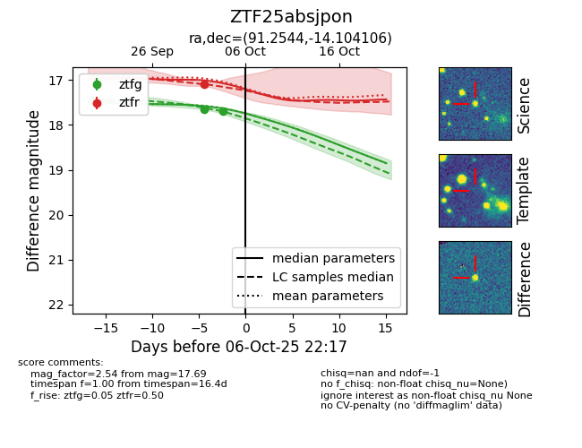
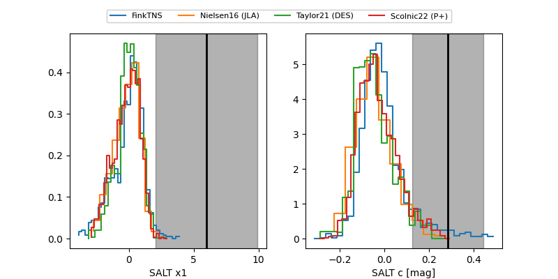

FINK: ZTF25absjpon
Lasair: ZTF25absjpon
ALeRCE: ZTF25absjpon
ZTF25absjpon (ztf,fink)
equatorial (ra, dec) = (91.2544,-14.10411)
galactic (l, b) = (220.6002,-16.54410)


last ztfg=17.69, ztfr=17.10
3 ztfg, 1 ztfr detections